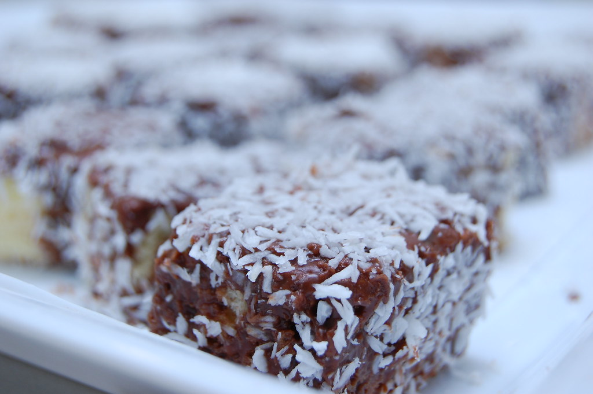

Lamingtons

Lamingtons are a baked Australian treat. A sponge cake, cut into squares, then coated in chocolate icing and dessicated coconut.
Ingredients
Sponge Cake
- 185 g (1 ¼ cup) plain flour (all-purpose flour)
- 2 teaspoons baking powder
- 40 g (⅓ cup) cornflour (US: cornstarch)
- 200 g (2 sticks minus 1 tablespoon) unsalted butter, softened
- 230 g (1 cup plus 1 tablespoon) caster sugar (superfine sugar)
- 2 teaspoons vanilla extract
- 3 eggs
- 125 ml (½ cup) full cream milk (whole milk)
Chocolate Icing
- 500 g (3 ⅔ cup) icing sugar (powdered sugar), sifted
- 200 g (7 oz) dark chocolate (bittersweet chocolate, 60% or 70% cocoa content)
- 15 g (1 tablespoon) unsalted butter
- 125 ml (½ cup) milk, plus more
- 325 g (12 oz) dessicated coconut (shredded coconut)
Steps
For the cake
(Ideally, make the cake the night before or see my Kitchen Notes below if you want to make everything on the same day)
- Make sure that the butter, eggs and milk are at room temperature. If they are not at room temperature, this can cause the batter to curdle, which will result in a dense cake.
- Preheat the oven to 180°C (350°F) (without fan).
- Butter a baking pan measuring approximately 17 x 27 x 4 cm (7 x 11 x 1.5 inch), and line the bottom with greaseproof paper.
- Place all of the ingredients for the cake into a large food processor and blitz until everything is thoroughly combined.
- The batter should be pale yellow and quite thick. If the batter looks a bit curdled (which can happen if not all of the ingredients are at room temperature), blitz for a few more seconds.
- If you don’t have a food processor, simply sift the flour, baking powder and cornflour (cornstarch) into the bowl of an electric stand mixer. Add the butter, sugar, vanilla, eggs and milk. Beat on low speed until all of the ingredients are incorporated. At this stage, the mixture might look a bit curdled. Increase the speed to high until the mixture has slightly increased in volume. You should have a thick, pale yellow mixture.
- Pour the mixture into the prepared baking tin and bake for about 30-35 minutes, or until a skewer inserted into the centre of the cake comes out clean. You may need to cover the cake with some foil if it is browning too quickly.
- Leave the cake in the tin for about 5 minutes before turning out onto a wire rack to cool, with the bottom of the cake facing up. This will help to ensure that the top of the cake flattens while it cools.
- Using a serrated knife (ideally a long, serrated bread knife), cut the sponge into 32 squares, or whatever size you wish. Keep in mind that, once coated in chocolate and coconut, the cakes will be much bigger in size.
For the chocolate icing
- Melt the butter and chocolate over low heat in a bain-marie (or a bowl over a pan of simmering water).
- Add the icing sugar (powdered sugar) and whisk in the milk until you have a thick, but slightly runny, mixture. The icing needs to be thick enough to coat the cakes, but runny enough to only leave a light coating.
- Leave the bain-marie on the stove over very low heat.
To assemble
- Pour the dessicated coconut onto a large plate.
- Using two forks, dip a piece of sponge into the chocolate icing mixture, making sure that all sides are coated, and allow any excess icing to drain off.
- Then roll the chocolate-coated sponge in the dessicated coconut, and place the lamington on a wire rack to dry.
- Repeat with the remaining sponge pieces.
- If the icing mixture becomes too thick, whisk in some milk to thin it out.
- Let the lamingtons set on a wire rack for about 30-60 minutes.
Recipe boosted from Eat Little Bird for the purposes of following the course at The Odin Project